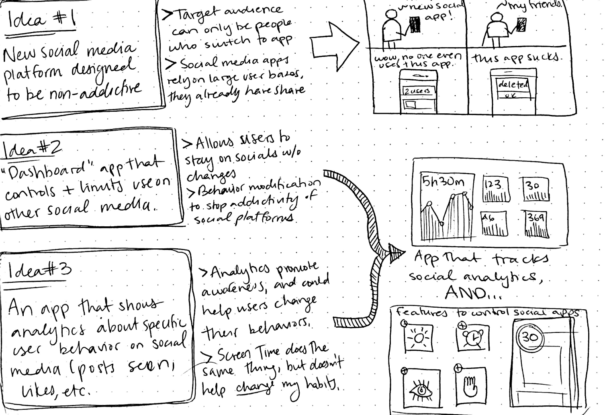
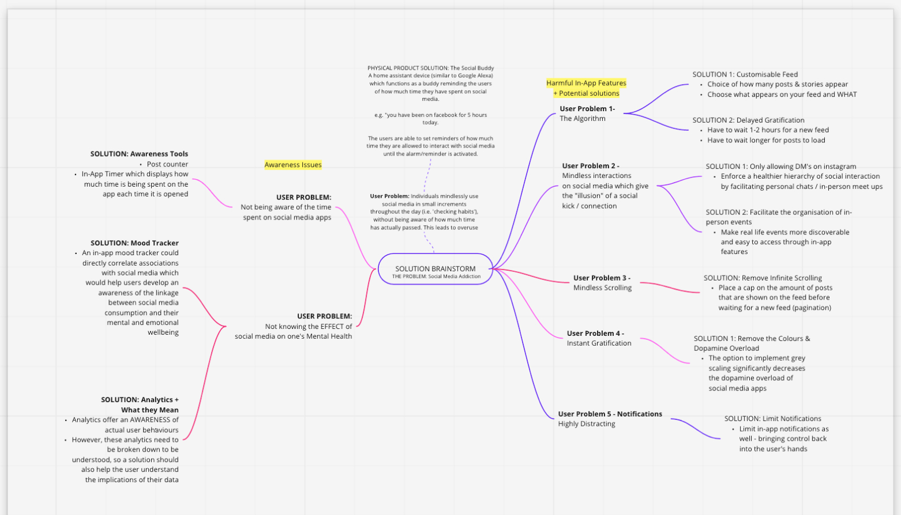
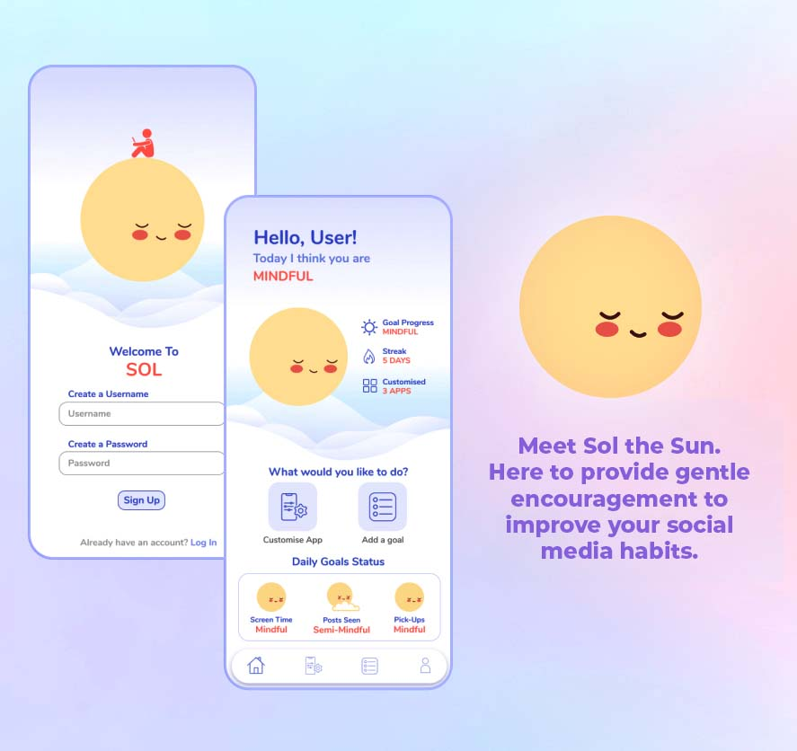
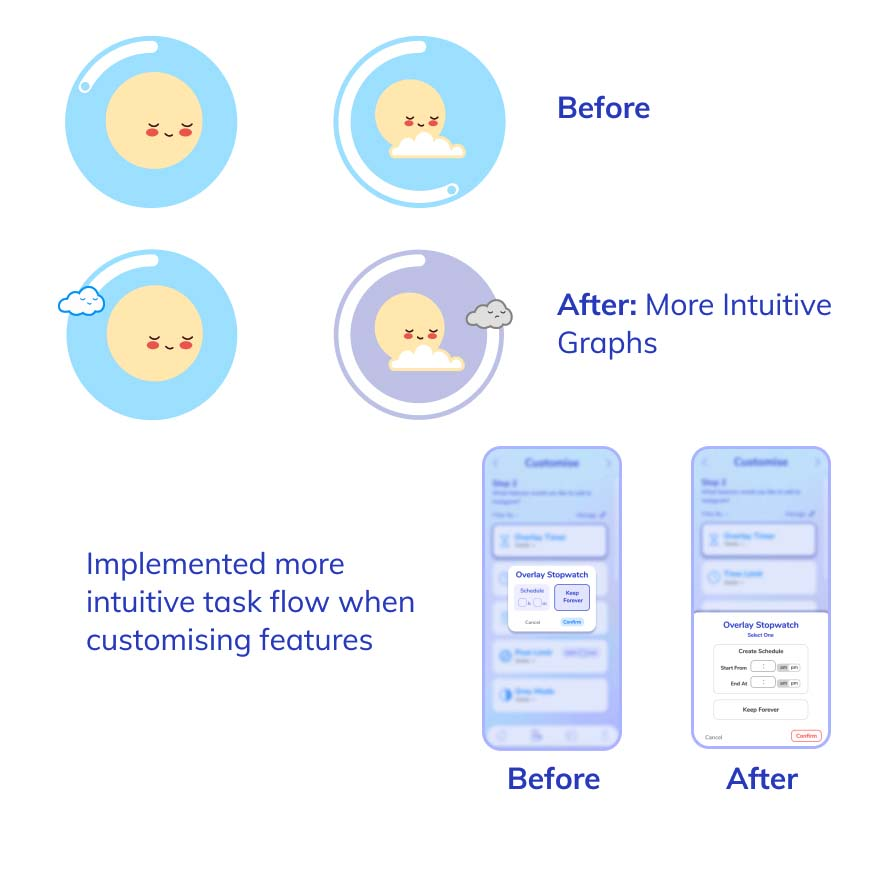

APR 2021 - MAY 2021
SYDNEY, NSW
Sol: Mindful Social Media
DESCRIPTION
The unprecedented growth of social media, in conjunction with negligent internal design decisions, have enkindled widespread social media addiction within adolescents and young adults.
Sol is an app that redesigns the way users interact with their social media, by intervening within the addictive Hook Model and thereby encouraging more mindful screen time.
Sol was developed by our team using the double diamond design framework, which included comprehensive research, exhaustive idea generation and an iterative design process.
🡵 View Pitch Deck
PROJECT TYPE
University Project
PROJECT ROLE
TOOLKIT
Research Insights
Hook Model
DESCRIPTION
The Hook Model is a behavioural design framework that is used by social media platforms to create addictive products, and keep users engaged with Hooks.
Some key addictive features that facilitate Hooks include endless feeds (infinite scrolling), visual content, notifications, and personalised content.
WHO'S MOST IMPACTED?
Women
Women are more likely to have higher social stress than men, and use platforms for social connections at a higher rate
Ages 13-30
Younger demographics are more dependent on their phones due to a higher need to belong, and lower self-control
Lower Income
People with higher socioeconomic status tend to access the internet more, but tend to use social media more productively
Key Insights
1
Most people do not use social media for socialisation, suggesting mindless consumption
2
There is a lack of awareness as to what constitutes mindless consumption and how addiction manifests
3
Mindless and short bursts of social media throughout the day creates a false perception of low screen time
Problem Definition
🎯
PROBLEM STATEMENT
There is a lack of user awareness regarding their own usage and screen addiction. There is also a lack of user control, due to companies maximising user engagement with the Hook Model.
👑
VISION STATEMENT
A solution which redesigns the way in which users interact with their social media, intervening within the trigger 🠆 action 🠆 reward 🠆 investment cycle and encouraging more mindful social media use.
Idea Generation


MIND-MAPPING
We began by 'idea dumping' through a mind map. We were then able to categorise our insights into two topics: awareness issues and harmful in-app features.
We concluded software solutions to be more accessible and relevant than a physical product
SKETCH-NOTING
We visualised our mindmap ideas through sketching. Ideas generated included:
(1) a non-addictive social media platform, and
(2) a 'dashboard' app that allows users to alter the addictive features of their social media apps
Generating seveal user personas allowed us to better empathise with the frustrations, goals, and motivations of our target demographic.
Concept Refinement
IDEA PROPOSAL
After our initial generation phase, we proposed a concept called Nudgeless, a dashboard app that allows users to control and disable addictive features directly inside their social media apps.
BODYSTORMING
Bodystorming allowed us to greater empathise with user needs. Some takeaways:
Personalisation 🠆 Different users value different features. Thus, a user survey at the beginning of the app could be useful to collect metrics about their use, and recommend initial feature sets
Liability 🠆 Accountability facilitates behavioural change. A 'goals with friends' feature could be useful to keep users on track with their goals, and motivate their peers to reduce their screen time.
Low-Fidelity Mockups
Iteration 1: Feedback
PAIN POINT 1
Unclear Task Flows
The interface was difficult to understand, as there was too much going on in the home page. Users also struggled to understand the different features of the 'customise' page
PAIN POINT 2
Unintuitive App Navigation
More guidance for the user could be helpful in making the app navigation easier. (e.g. include headers like "What would you like to do today?")
PAIN POINT 3
Unclear Functionality
Users struggled to understand what the main feature of the app was, and were overwhelmed by all of the different tools displayed on the home page.
Mid-Fidelity
DESIGN PROCESS
Following the feedback on our low fidelity wireframe, we were able to build upon our initial design concept to create a wireframe on Figma that was clearer in its app purpose, and mirrored the design of actual in-app usage.
Iteration 2: Feedback
PAIN POINT 1
Lack of Intuitive Data
Most users were not sure how to interpret the analytics on the app, and felt overwhelmed by the amount of numbers it displayed.
PAIN POINT 2
Lack of Concept Clarity
Users also misinterpretted our app as merely an analytics app rather than a 'dashboard' app with customisable features like intended.
PAIN POINT 3
Lack of Empathetic Design
The excessive quantitative data and lack of positive reinforcement led to a sense of guilt over usage, repelling mindful change
High-Fidelity Designs

